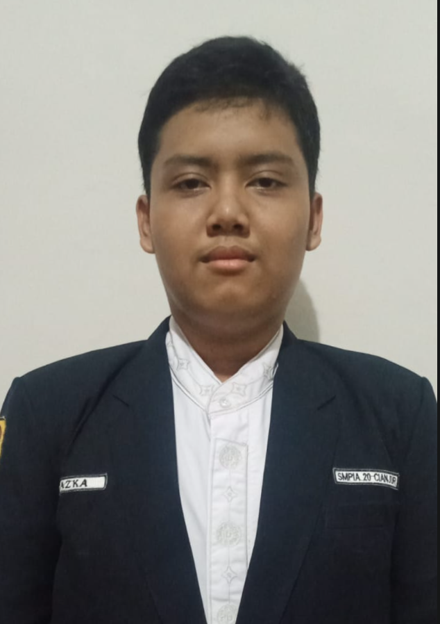

Seorang siswa SMKN 1 Cianjur yang berdedikasi tinggi dalam mengeksplorasi dunia teknologi informasi dan pengembangan web modern.
Perkenalkan nama saya Azka Fathan Mubina. Saya adalah siswa di SMKN 1 Cianjur, Jurusan Pengembangan Perangkat Lunak dan Gim (PPLG).
Saya memiliki minat dalam dunia Frontend Development dan sedang mempelajari HTML, CSS, JavaScript, serta GitHub untuk membuat website modern dan responsif.
Fokus utama saya adalah membangun antarmuka pengguna yang intuitif dan memberikan pengalaman digital terbaik bagi setiap pengunjung.

Silakan hubungi atau kunjungi profil media sosial saya melalui tautan di bawah ini: